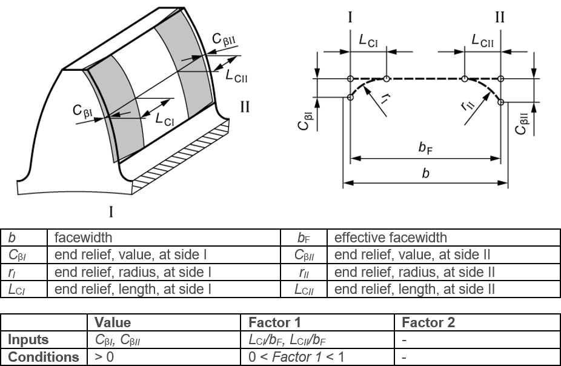

|
|
|


齿端修薄，弧形，两侧I和II
图（见图15.55）显示了齿面图线简图中定义的弧形齿端修薄，侧I和侧II。"值"和"因子1"设置也在此图中显示。修形应用于齿轮的有效齿宽。
弧形齿端修薄发生在从齿面图线的特定点开始、朝前后端面方向持续且逐渐去除材料的区域。在这种情况下，I 和 II 的编号与两个端面相关（见图15.55）。

图15.55：弧形齿端修薄，侧I和侧II
End relief, arc-like, sides I and II
Figure (see Figure 15.55) shows the arc-like end relief, side I and side II, as defined in the flank line diagram. The Value and Factor 1 settings are also shown in this figure. The modification is applied over the effective facewidth of the gear.
Arc-like end relief occurs where material is removed constantly, and increasingly, from the flank line, starting from particular points, in the direction of the front and rear face surface. In this case, the numbers for I and II relate to both face surfaces (see Figure 15.55).
Figure 15.55: Arc-like end relief, sides I and II